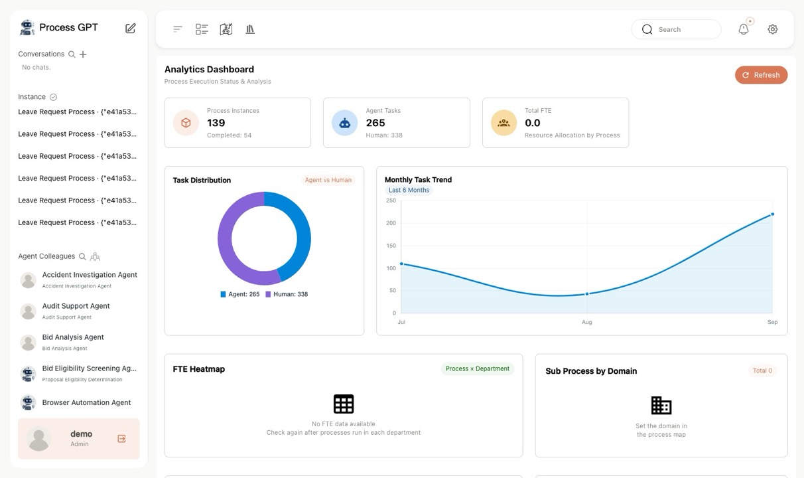
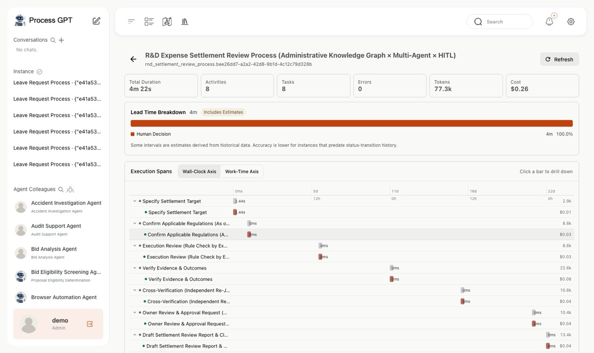
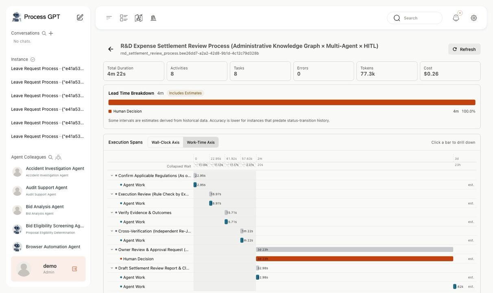
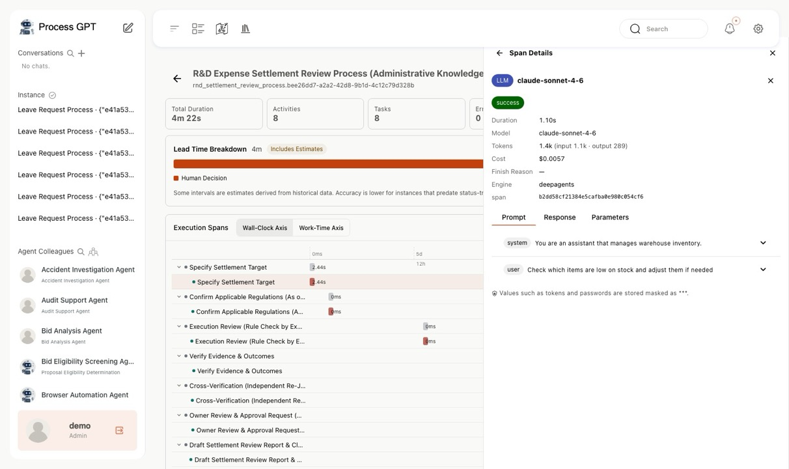
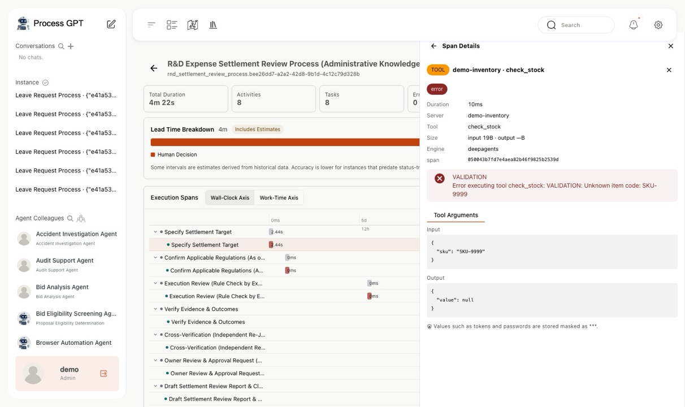

Where Do Delays Come From? Splitting Lead Time to Find Bottlenecks
“Why does this task take so long to complete?” To improve a process, you need to know not just the total elapsed time but which stage the time was spent in.
The fix differs depending on whether the human review stage is long, agent execution is slow, or work sits waiting before it is assigned. Total time alone does not tell you where to start.
The Lead Time Breakdown in the Process GPT execution profiler splits total elapsed time by category. This post walks through how to read the time composition, drill into execution details, and what to watch out for when interpreting the data.
1. Total elapsed time is split into three categories
Two tasks may both take three days, but what you should improve depends on which segment is longest: human judgment, agent execution, or queue wait.
In the demo, time classified as 'human judgment' accounted for the vast majority. Because this segment also includes waiting for review and approval, it should not be read as time the assignee spent actively working. In cases like this, it is more effective to examine the review and approval procedure first rather than model speed.

The existing analytics dashboard shows running instances and the share of work done by humans versus agents.
The demo instance's elapsed time of 4 days is shown on screen as 100.0% 'human judgment'. Since this segment includes review and approval wait time, it must be interpreted separately from actual working time.
2. Zoom into short execution segments with the work-time axis
Execution segments are displayed as a waterfall chart with bars laid out in chronological order. In the demo data, the segments with recorded execution events made up less than 1% of the total lead time, so rendering the real time intervals as-is made the bars hard to distinguish.
The work-time axis compresses idle segments with no events and expands the recorded work segments in proportion to their relative length. In the demo, the combined bar width for the same data grew from 160 pixels to 1,400 pixels, making it much easier to compare individual segments.
Compressed wait time is shown separately in a badge below the scale. Users can see how much of the total elapsed time has been compressed on screen.
The work-time axis is a display mode for examining short execution segments in detail. When judging total duration, always check the original time axis and the compressed wait time as well.

When real time intervals are preserved, short work segments shrink to near-dots and are hard to compare.
On the work-time axis, idle segments are compressed to enlarge the work bars, and the compressed time is shown as a badge.
3. Find the cause of delays in task and call records
Switching to the work-time axis makes it easier to compare human and agent execution segments. In the demo, the human review tasks shown in orange run noticeably longer than the agent execution segments shown in blue.
Select a task bar to see the related language model calls and tool calls. The language model call record shows the model, duration, and token cost; the prompt tab shows the messages sent; and the tool call record shows the input values and returned results. Sensitive values such as auth tokens and passwords are masked at the storage stage.
By aggregating multiple executions, you can also identify recurring bottlenecks per process. In the demo, the human review step was the longest in both processes. From there, you can further examine the workload at that step and the reasons for approval delays.

Compare human review tasks against agent execution segments to find the steps that need a closer look.
▶ Task details: language model and tool call records

Select a task bar to see the model, duration, and token cost of the related language model calls.

Inspect the input values and returned results of tool calls. Auth tokens and passwords are masked at the storage stage.
4. Distinguish measured values from estimates
Accurate time classification requires both start and completion records. Of the 124 human tasks inspected during development, only 6 still had a start event, so the records had to be supplemented.
We then added database triggers so that status changes are recorded in the history table. Since the new recording method cannot recover events that were missed in the past, we applied the following principles.
- Time back-calculated from other records: marked as an 'estimate' so it can be distinguished from measured values.
- Segments with no evidence of completion: left blank rather than calculating an arbitrary duration. During inspection, there was a case where incorrectly filling in a missing end time produced a human working time of 29 days.
Clearly flagging segments with insufficient records prevents estimates from being mistaken for actual measurements and lets you set improvement priorities with confidence.
5. View it in the existing process analytics screen
The lead time breakdown links records from the LLM proxy and event logs to the process instance. You can review execution segments and call details together in the existing process analytics screen without opening a separate observability application.
6. Improve where the time is going
The lead time breakdown can be used to prioritize automation and operational improvements. After identifying the longest segment, consider the following improvements.
| Where time is concentrated | Improvements to consider |
|---|---|
| 🧑 Human judgment | Examine the causes of review and approval delays; split roles into agent drafting and human approval, or clarify the approval criteria |
| 🤖 Agent execution | Review prompts, the number of tool calls, and model selection; compare cost and output quality together |
| ⏳ Queue wait | Review assignment rules and the workload per assignee |
See it in Process GPT
| Concept in this article | Process GPT capability |
|---|---|
| Compare human and agent durations within the same process | Design humans and agents together with BPMN lanes ↗ See it on the product page |
| Select automation targets based on bottleneck analysis | A self-learning structure that improves itself by learning from execution records ↗ See it on the product page |
See the Process GPT product page for full details, and process-gpt.io for the live application.